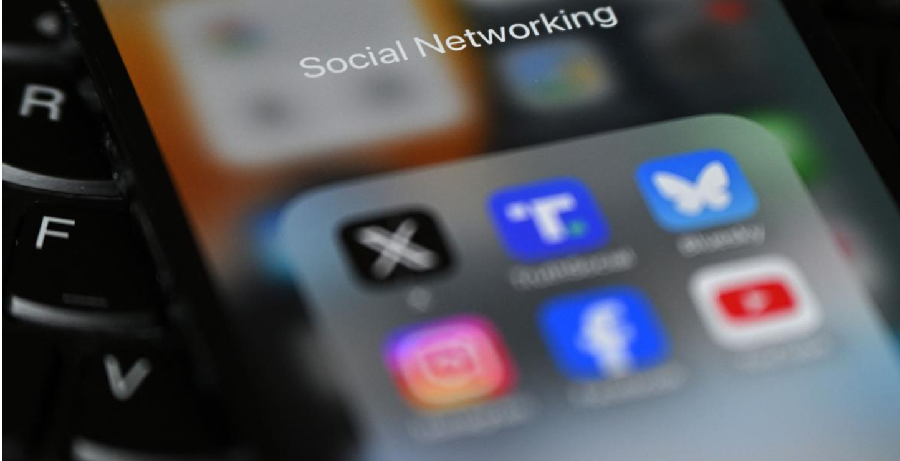

UK will go further to protect kids with world-leading additional restrictions on harmful features online such as live streaming and strangers communicating with children

Government action shows clear choice to side with families over tech companies to put power back in parents’ hands and give kids the childhood they deserve Decisive action – backed by 9 in 10 parents – expected to be brought to Parliament before Christmas, with protections expected to come into force in Spring 2027 Children will be given back their childhoods thanks to government action to ban social media platforms from offering services to under-16s, with less time for scrolling and more time for play. The plans will set a new normal for future generations, kickstarting a cultural shift and driving forward the government’s fight to give every child the best start in life. The government plans to use the same model for a social media ban as Australia. This would capture user-to-user platforms, whose purpose is to enable social interaction and which allow users to post material, alongside algorithms. The ban will therefore include platforms like Snapchat, TikTok, YouTube, Instagram, Facebook and X. We do not intend for messaging services like WhatsApp and Signal to be included in the social media ban. In a move to protect children online and address the scale of the challenge, the government will also go further than a blanket ban on social media with world-leading blocks on harmful functions such as livestreaming and stranger communication with children for under-16s. These restrictions – which together with the ban go further than any other country – will apply to a wider range of online services, including on gaming sites. Restrictions on these functionalities will also be on by default for 16- and 17-year-olds to prevent a cliff-edge at 16. The government will also be looking in more detail at overnight curfews and breaks in infinite scrolling for under-18-year-olds and will set out more detail in July.
Prime Minister Keir Starmer said: Parents want to keep their kids safe and happy, but the online world has made that harder than ever. I’ve heard first hand from families crying out for change and we will do right by them. That’s why we’re going further than any country in the world by banning social media for under-16s and putting wider protections in place to give kids their childhood back. This is a line in the sand. Tech giants had their chance and failed, but we’re stepping in to protect children, back parents and set a new normal for future generations. So-called AI ‘romantic companion’ chatbots – designed to simulate sexual relationships or roleplay with users – will have to enforce a minimum age of 18. Similar intimate functionalities will be restricted for under-18s on AI chatbots more widely. Taken together, these measures will mean a much more comprehensive model than just a blanket ban on social media — one that responds to how children experience harm online, rather than just where it happens. The changes will back parents grappling with the risks for children that come from the online world and help empower them by providing a clear decision on what is safe and age-appropriate for children. This is a decisive first step by the government which marks a clear choice to put children’s wellbeing first and give them a healthy life online. We stand ready to take further measures in the future. Technology Secretary Liz Kendall said: Today we take a bold and significant step, towards creating a safer, healthier life online, for our children and future generations. Tech companies have had countless opportunities to keep children safe, yet they have failed to act. That is why we are a taking power away from the tech giants and putting it back in parents’ hands. My driving force has always been to give every child, from every background, the best possible start in life. That is what these regulations will deliver. The government will also learn the lessons from Australia’s experience by introducing more highly effective age assurance (HEAA) measures to support compliance, making it far harder for children to bypass safeguards.